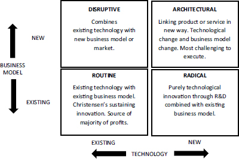
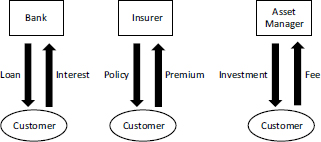
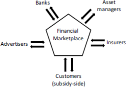
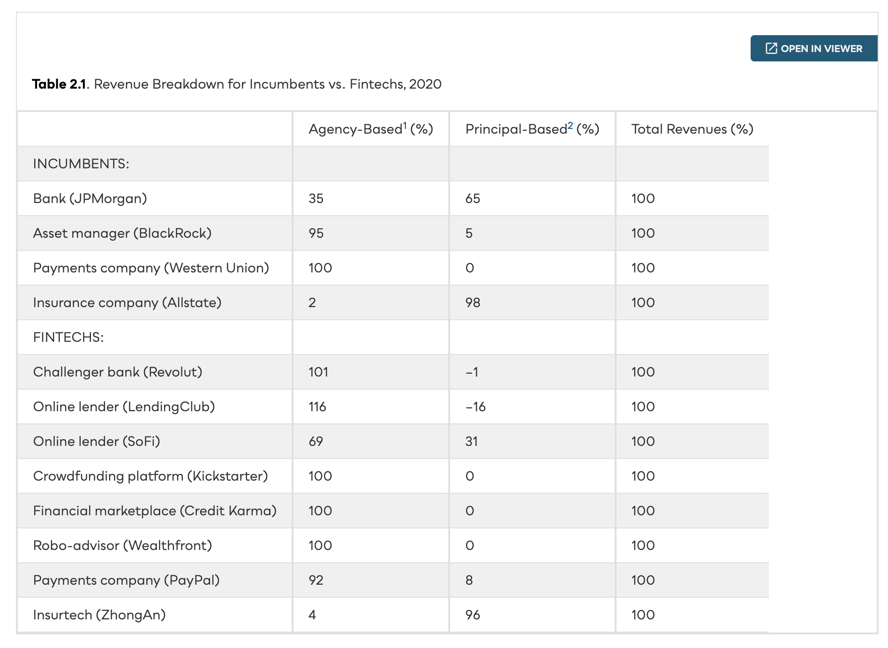

Understanding fintech requires three bodies of theory working in concert — financial intermediation, innovation strategy, and business-model design. Each supplies a distinct diagnostic question; together they form the analytical engine for every case we examine this term.
The financial system features a bewildering array of intermediaries fulfilling many different functions. Fintech is challenging each of them — sometimes by replacing them, sometimes by making them better.
Economists explain why intermediaries persist using five dimensions. Can you name them?
Financial intermediaries exist because of five persistent frictions. Fintech does not eliminate these frictions — it re-prices them.
The unit cost of financial intermediation in the United States has remained roughly constant at ~2% of financial transactions for over 130 years — despite ATMs, electronic trading, and the internet.
Christensen’s four-step process explains how inferior products in overlooked market segments eventually overtake incumbents. The pattern recurs across fintech verticals.
Incumbents need to know which type they face. The wrong diagnosis leads to the wrong response. Sustaining innovations are common; true disruptions are rare.
Pisano’s 2×2 maps innovation along two dimensions: the degree to which it leverages existing technical competencies and existing business models.

Most fintechs start in one quadrant and migrate. The strategic question: which direction are they moving — and why?
The fundamental architectural choice: serve one customer group (product model) or orchestrate two or more groups on a platform (market model). Most transformational fintechs are multi-sided.


Multi-sided platforms must solve the chicken-and-egg problem. The subsidy side is attracted at or below cost; the money side pays. Getting the price structure right is the defining strategic challenge.
How a fintech earns revenue determines its risk profile, capital requirements, and regulatory obligations. The fundamental split: fee-based (agency) vs. balance-sheet (principal).

A financial intermediary is vulnerable if it offers an undifferentiated, bundled product to a large pool of customers, where the more profitable ones cross-subsidise the less profitable ones.
McKinsey identifies four vulnerability signs: (1) cross-subsidising customers, (2) forced bundle buying, (3) delivery mismatched to demand, (4) experience that lags global best practice. Credit cards — an oligopoly ripe for unbundling — gave Revolut its opening.